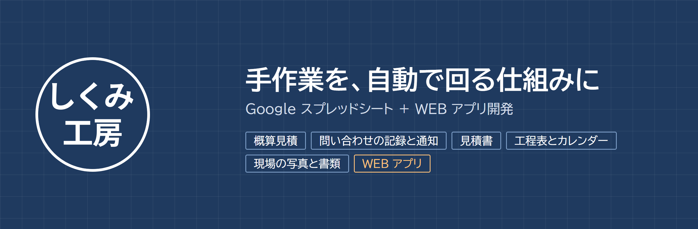
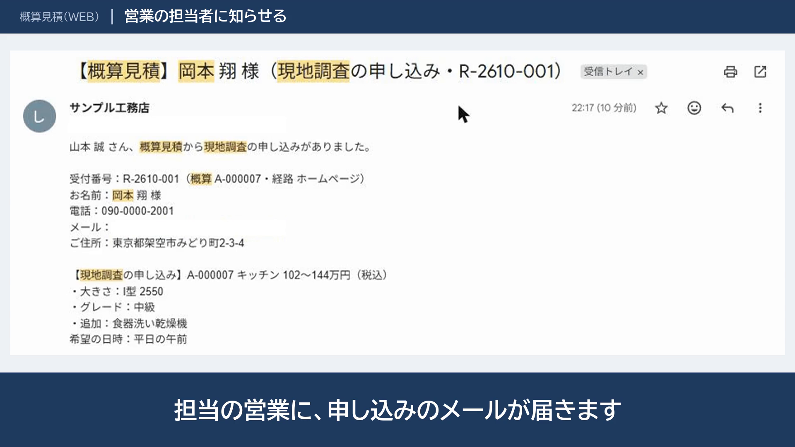
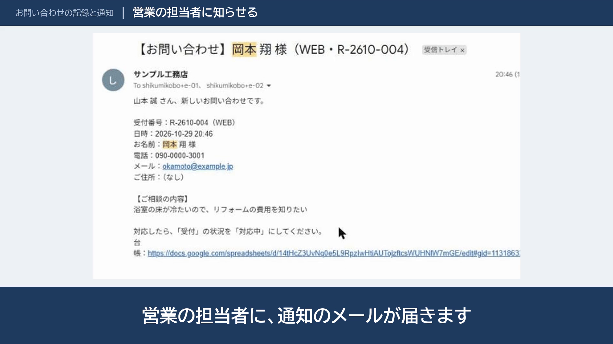
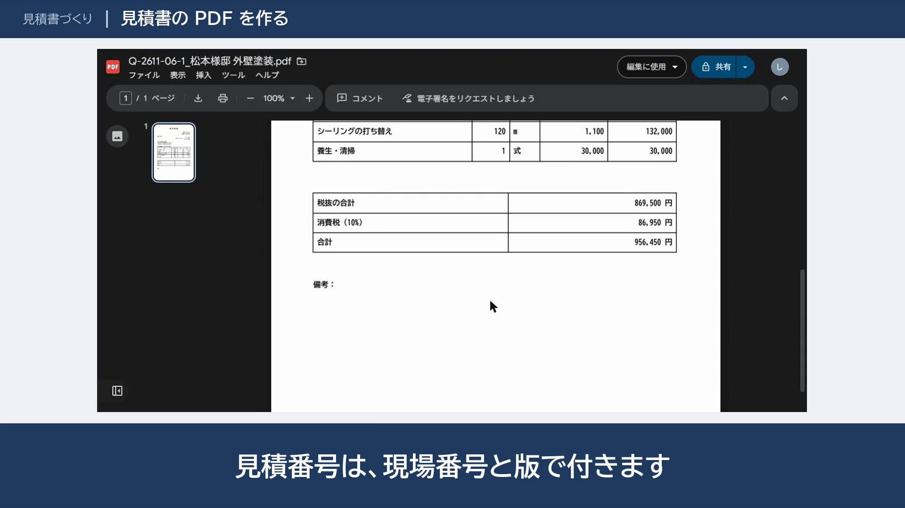
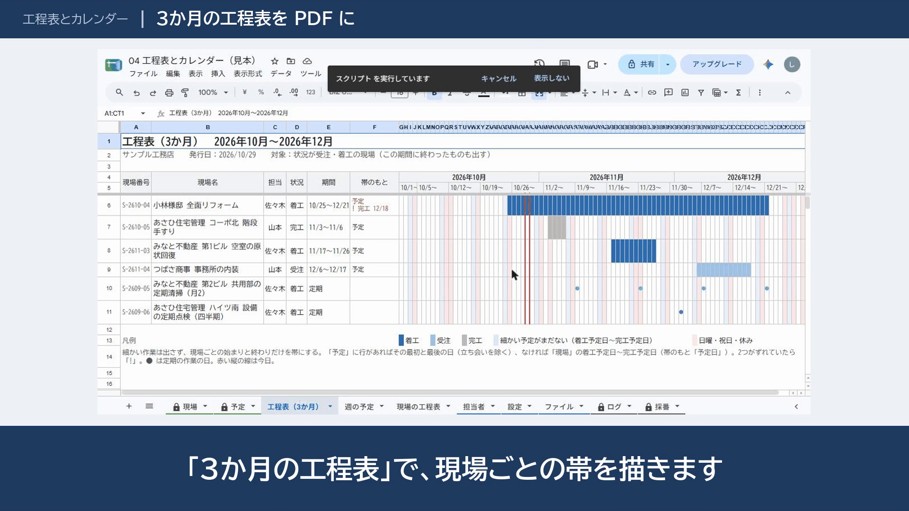
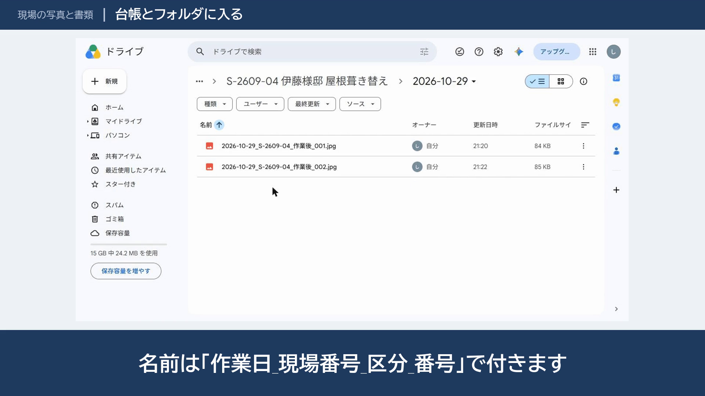
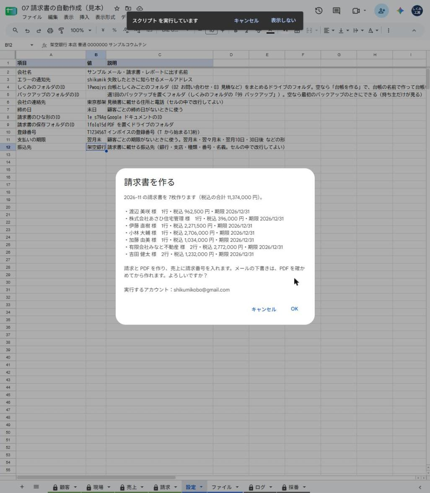
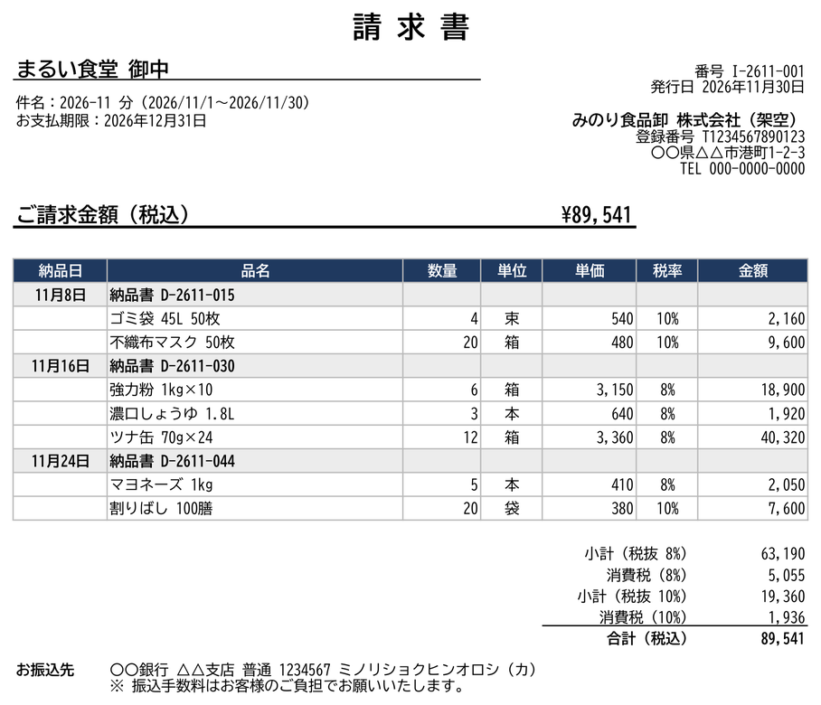

しくみ工房 実績
スプレッドシートの手作業を、自動で回る仕組みに
WEB アプリの見本
現場管理アプリ（WEB アプリ）
入る人によって見える範囲が変わる、現場管理の WEB アプリです。お客さんには進み具合だけの専用ページを用意できます
| 作業前 | シートごと共有すると、金額も社内のメモも見えてしまう |
|---|---|
| 作業後 | 社長・社員・職人・お客さんで見える範囲を分ける。職人は担当の現場だけ、金額は見えない |
スマホにインストールできる・権限はデータベース側でも守る（テストつき）


スプレッドシートの見本
従業員10人ほどの工務店を例に、問い合わせから見積・現場まで、6つの仕組みを作りました。どれも Google のスプレッドシートと Apps Script で動き、新しいソフトを入れる必要はありません。動画は1〜2分で、実際の画面で紹介しています。
データはすべて架空です。削減時間は、月の件数と1件あたりの時間を仮に置いた試算で、時給2,000円で換算しています。お客さんの実際の数字で計算し直します。
概算見積（WEB）
ホームページから、お客さんが24時間、自分で概算の金額を出せます
| 作業前 | 電話・メールで1件20分。返事は翌日 |
|---|---|
| 作業後 | スマホで選ぶと、その場で金額の幅が出る。現地調査の申し込みも画面から |
年約40時間・約8万円分年間の削減（試算）


お問い合わせの記録と通知
WEB と店頭の問い合わせを、自動で記録し、担当者に知らせます
| 作業前 | メールや紙から転記して、手で連絡。漏れや二重登録がある |
|---|---|
| 作業後 | 台帳に自動で1行入り、担当者に通知。お客さんに自動返信 |
年約22時間・約4.4万円分年間の削減（試算）


正式な見積書
品目を選んで数量を入れるだけで、見積書の PDF とメールの下書きができます
| 作業前 | 前の Excel をコピーして打ち直し。1件45分 |
|---|---|
| 作業後 | 品目を選び、合計・版は自動。1件15分 |
年約90時間・約18万円分年間の削減（試算）


工程表とカレンダー
予定を1行入れると、職人さんのカレンダーと前日のメールに届きます
| 作業前 | 夕方に1人ずつ電話。工程表は Excel で作り直して印刷 |
|---|---|
| 作業後 | カレンダーに反映すると、前日にメールが自動で届く。工程表は PDF に |
年約48時間・約9.6万円分年間の削減（試算）


現場の写真と書類
スマホから送るだけで、写真が現場ごとのフォルダに整理されます
| 作業前 | LINE の写真を保存し、現場のフォルダに振り分け。報告書は Word で作る |
|---|---|
| 作業後 | 送るだけで現場のフォルダに入る。報告書は印を付けて1通5分 |
年約110時間・約22万円分年間の削減（試算）


請求書の自動作成
月末の請求書を、ボタン1つで。その月の売上を顧客ごとにまとめ、請求書の PDF とメールの下書きを作ります
| 作業前 | 売上の表から金額を拾い、請求書を手で作って PDF にし、メールを書く。月3時間 |
|---|---|
| 作業後 | 顧客ごとの請求書の PDF とメールの下書きができる。確認して送るだけ（5分）。請求した売上には番号が付き、二重の請求にならない |
年約35時間・約7万円分年間の削減（試算）


Excel の見本
見積書・納品書・請求書（Excel）
見積書から納品書、月締めの請求書まで、Excel のまま。8%と10%が混ざっても、税率ごとに合計を出します（架空の食品・業務用品の卸）
| 作業前 | 見積書と納品書を、前のファイルをコピーして打ち直す。月末に、納品を拾って請求書を作る |
|---|---|
| 作業後 | 見積から納品書、月ごとの請求書が、同じ Excel でつながる。税率ごとの合計と消費税（切り捨て）は自動 |
月約18時間の短縮・年約215時間・約43万円分（架空の卸の想定）

